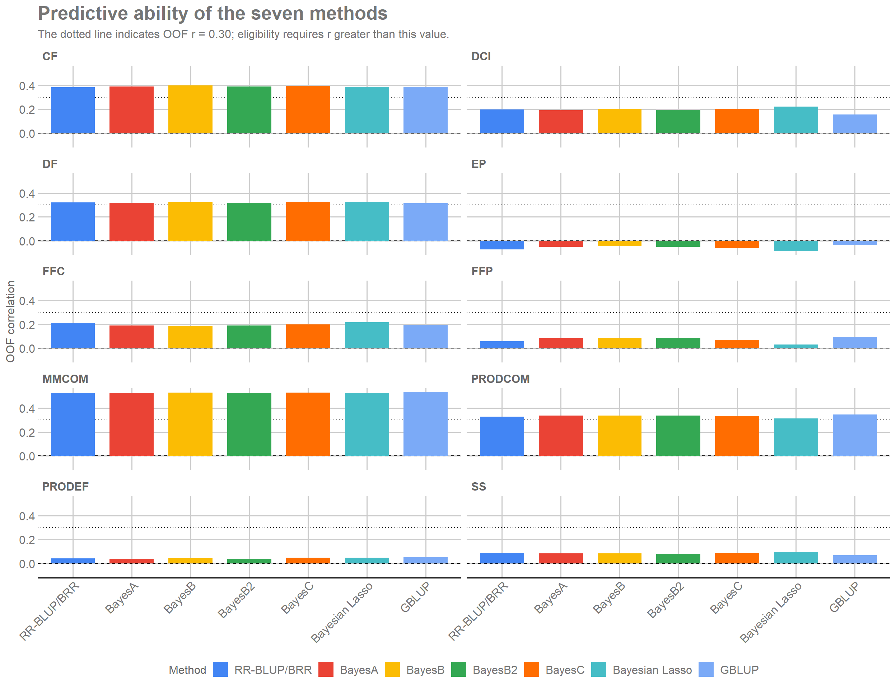
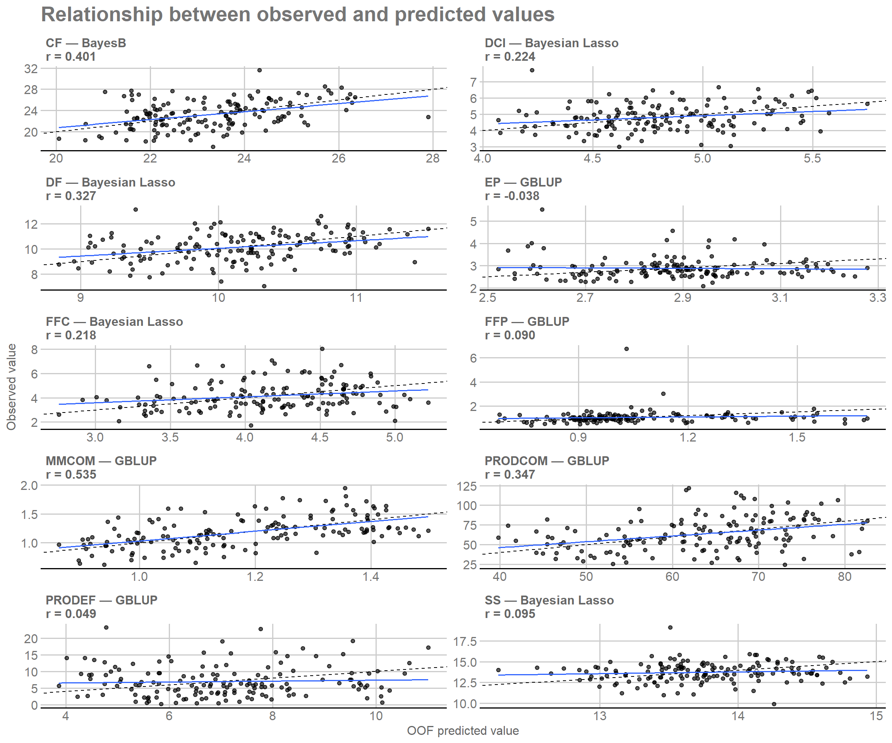
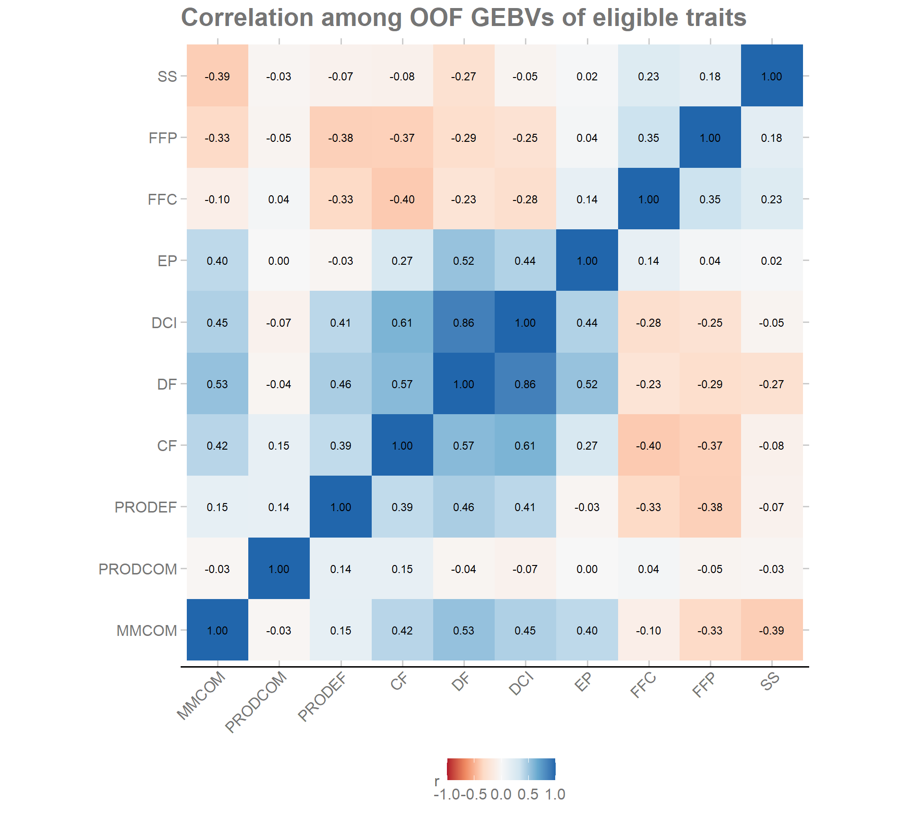

2. Preparing the analysis
2.1 Packages and helper functions
The packages below are used for table manipulation, figures,
formatting, and project-relative paths.
library(dplyr) # Group, join, and summarize tables.
library(tidyr) # Reshape data between long and wide formats.
library(ggplot2) # Build diagnostic figures.
library(ggthemes) # Apply the GDocs theme and color scale.
library(knitr) # Format tables in R Markdown documents.
library(here) # Build project-relative paths.The helper function below standardizes table presentation throughout
the tutorial.
3. Method comparison and choice
3.2 DIC and relative support
DIC is summarized within each trait as complementary information.
Following the logic of the reference study (Silva et al. 2021 ) :
\[
\Delta_j=\overline{DIC}_j-\min_k(\overline{DIC}_k),
\]
\[
Wprob_j=\frac{\exp(-\Delta_j/2)}{\sum_k\exp(-\Delta_k/2)},
\qquad
ER_j=\frac{Wprob_{\max}}{Wprob_j}.
\]
Wprob represents relative support derived from DIC and
is not interpreted as a calibrated posterior model probability.
# Combine fold performance and DIC to build the quantities used for model comparison.
model_comparison <- pooled_metrics |>
left_join(fold_summary, by = c("Trait", "Method")) |>
group_by(Trait) |>
mutate(
Delta_DIC = Mean_DIC - min(Mean_DIC),
log_weight = -0.5 * Delta_DIC,
stable_weight = exp(log_weight - max(log_weight)),
Wprob = stable_weight / sum(stable_weight),
# Compute the evidence ratio relative to the method with the largest Wprob in each trait.
ER = max(Wprob) / Wprob
) |>
ungroup() |>
select(
Trait, Method, Mean_DIC, SD_DIC, Delta_DIC, Wprob, ER,
N, r, p_value, RMSE, MAE, Bias, Slope,
Mean_fold_r, SD_fold_r, Mean_fold_RMSE, SD_fold_RMSE,
Mean_fold_MAE, SD_fold_MAE
) |>
arrange(match(Trait, traits), Delta_DIC)
3.3 Integrated comparison and method choice
OOF predictive performance and DIC address different questions. OOF
correlation is the main reference for predictive ability, whereas DIC
provides complementary information on fit and complexity.
# Order methods and build the OOF-correlation figure by trait.
predictive_plot <- model_comparison |>
mutate(Method = factor(Method, levels = methods)) |>
ggplot(aes(x = Method, y = r, fill = Method)) +
geom_hline(yintercept = 0, linetype = 2, linewidth = 0.4) +
geom_col(width = 0.75) +
facet_wrap(~ Trait, scales = "fixed", ncol = 2) +
scale_fill_gdocs(
breaks = methods,
labels = method_labels
) +
scale_x_discrete(labels = method_labels) +
labs(
x = NULL,
y = "OOF correlation",
fill = "Method",
title = "Predictive ability of the seven methods"
) +
project_theme +
guides(fill = guide_legend(nrow = 1, byrow = TRUE)) +
theme(
legend.direction = "horizontal",
legend.box = "horizontal",
axis.text.x = element_text(angle = 45, hjust = 1)
)
predictive_plot

Past versions of predictive-correlation-figure-1.png
The joint table allows the two evidence sources to be compared
without combining them into a single artificial score.
model_comparison_display <- model_comparison |>
mutate(Method_label = unname(method_labels[Method])) |>
transmute(
Trait,
Method,
Method_label,
DIC = sprintf("%.2f", Mean_DIC),
Delta_DIC = sprintf("%.2f", Delta_DIC),
Wprob = sprintf("%.3f", Wprob),
ER = sprintf("%.3f", ER),
r = sprintf("%.3f", r),
p_value = if_else(
p_value < 0.001,
"<0.001",
sprintf("%.3f", p_value)
)
) |>
arrange(match(Trait, traits), match(Method, methods))
format_table(
model_comparison_display |>
select(Trait, Method_label, DIC, Delta_DIC, Wprob, ER, r, p_value),
caption = "Comparison of the seven methods by trait",
col.names = c("Trait", "Method", "DIC", "Delta DIC", "Wprob", "ER", "r", "p-value")
)
Comparison of the seven methods by trait
Trait
Method
DIC
Delta DIC
Wprob
ER
r
p-value
MMCOM
RR-BLUP/BRR
-19.28
0.48
0.182
1.270
0.526
<0.001
MMCOM
BayesA
-18.40
1.36
0.117
1.972
0.528
<0.001
MMCOM
BayesB
-17.65
2.11
0.081
2.866
0.530
<0.001
MMCOM
BayesB2
-18.38
1.38
0.116
1.991
0.529
<0.001
MMCOM
BayesC
-18.47
1.28
0.122
1.899
0.529
<0.001
MMCOM
Bayesian Lasso
-19.75
0.00
0.231
1.000
0.526
<0.001
MMCOM
GBLUP
-18.89
0.86
0.150
1.539
0.535
<0.001
PRODCOM
RR-BLUP/BRR
1069.69
0.86
0.148
1.536
0.329
<0.001
PRODCOM
BayesA
1070.03
1.20
0.125
1.823
0.336
<0.001
PRODCOM
BayesB
1070.29
1.46
0.110
2.073
0.337
<0.001
PRODCOM
BayesB2
1070.05
1.22
0.124
1.839
0.338
<0.001
PRODCOM
BayesC
1069.83
1.00
0.138
1.647
0.333
<0.001
PRODCOM
Bayesian Lasso
1069.98
1.15
0.128
1.775
0.314
<0.001
PRODCOM
GBLUP
1068.83
0.00
0.227
1.000
0.347
<0.001
PRODEF
RR-BLUP/BRR
714.34
0.89
0.138
1.557
0.042
0.606
PRODEF
BayesA
714.21
0.76
0.147
1.465
0.038
0.641
PRODEF
BayesB
714.52
1.07
0.126
1.703
0.044
0.593
PRODEF
BayesB2
714.18
0.73
0.149
1.442
0.038
0.647
PRODEF
BayesC
714.45
0.99
0.131
1.644
0.046
0.572
PRODEF
Bayesian Lasso
715.07
1.62
0.095
2.251
0.046
0.576
PRODEF
GBLUP
713.45
0.00
0.215
1.000
0.049
0.554
CF
RR-BLUP/BRR
557.47
1.23
0.119
1.850
0.386
<0.001
CF
BayesA
557.77
1.53
0.102
2.151
0.391
<0.001
CF
BayesB
556.88
0.63
0.160
1.372
0.401
<0.001
CF
BayesB2
557.74
1.50
0.104
2.114
0.391
<0.001
CF
BayesC
556.62
0.37
0.182
1.205
0.397
<0.001
CF
Bayesian Lasso
556.24
0.00
0.220
1.000
0.389
<0.001
CF
GBLUP
557.56
1.32
0.114
1.933
0.389
<0.001
DF
RR-BLUP/BRR
348.39
0.35
0.164
1.192
0.321
<0.001
DF
BayesA
349.09
1.05
0.115
1.694
0.319
<0.001
DF
BayesB
349.39
1.35
0.099
1.967
0.324
<0.001
DF
BayesB2
349.08
1.05
0.116
1.687
0.318
<0.001
DF
BayesC
348.57
0.53
0.150
1.307
0.326
<0.001
DF
Bayesian Lasso
348.03
0.00
0.195
1.000
0.327
<0.001
DF
GBLUP
348.43
0.39
0.160
1.218
0.316
<0.001
DCI
RR-BLUP/BRR
292.92
1.03
0.133
1.673
0.200
0.014
DCI
BayesA
293.54
1.65
0.098
2.283
0.193
0.018
DCI
BayesB
292.81
0.92
0.141
1.583
0.201
0.014
DCI
BayesB2
293.53
1.65
0.098
2.278
0.194
0.017
DCI
BayesC
292.16
0.27
0.194
1.147
0.200
0.014
DCI
Bayesian Lasso
291.89
0.00
0.223
1.000
0.224
0.006
DCI
GBLUP
293.24
1.35
0.113
1.964
0.158
0.054
EP
RR-BLUP/BRR
163.40
2.56
0.079
3.605
-0.075
0.362
EP
BayesA
161.87
1.04
0.170
1.681
-0.052
0.523
EP
BayesB
161.94
1.10
0.165
1.734
-0.046
0.577
EP
BayesB2
161.86
1.03
0.171
1.670
-0.052
0.528
EP
BayesC
162.94
2.11
0.100
2.868
-0.062
0.452
EP
Bayesian Lasso
165.46
4.62
0.028
10.089
-0.090
0.274
EP
GBLUP
160.84
0.00
0.286
1.000
-0.038
0.645
FFC
RR-BLUP/BRR
376.66
0.79
0.133
1.481
0.210
0.010
FFC
BayesA
376.39
0.52
0.152
1.297
0.191
0.019
FFC
BayesB
376.62
0.74
0.136
1.450
0.186
0.023
FFC
BayesB2
376.40
0.52
0.151
1.300
0.190
0.020
FFC
BayesC
376.74
0.86
0.128
1.538
0.200
0.014
FFC
Bayesian Lasso
377.16
1.29
0.103
1.901
0.218
0.007
FFC
GBLUP
375.87
0.00
0.197
1.000
0.195
0.017
FFP
RR-BLUP/BRR
198.97
3.80
0.043
6.676
0.058
0.484
FFP
BayesA
195.86
0.69
0.202
1.409
0.086
0.293
FFP
BayesB
195.99
0.81
0.190
1.501
0.089
0.280
FFP
BayesB2
195.82
0.65
0.206
1.383
0.087
0.290
FFP
BayesC
198.06
2.89
0.067
4.240
0.069
0.399
FFP
Bayesian Lasso
202.46
7.28
0.007
38.143
0.032
0.701
FFP
GBLUP
195.17
0.00
0.285
1.000
0.090
0.273
SS
RR-BLUP/BRR
381.93
0.45
0.147
1.254
0.085
0.302
SS
BayesA
382.39
0.92
0.116
1.580
0.082
0.319
SS
BayesB
382.11
0.64
0.134
1.374
0.084
0.308
SS
BayesB2
382.42
0.94
0.115
1.599
0.082
0.321
SS
BayesC
381.74
0.26
0.161
1.140
0.085
0.302
SS
Bayesian Lasso
381.48
0.00
0.184
1.000
0.095
0.248
SS
GBLUP
381.99
0.51
0.143
1.289
0.067
0.414
The method used in subsequent steps is selected within each trait by
the highest OOF correlation. Ties are resolved, in order, by lower RMSE,
lower MAE, and lower mean DIC.
trait_scale <- predictions |>
distinct(Trait, IND, Observed) |>
group_by(Trait) |>
summarise(
Phenotypic_mean = mean(Observed, na.rm = TRUE),
Phenotypic_SD = sd(Observed, na.rm = TRUE),
.groups = "drop"
)
selected_methods <- model_comparison |>
group_by(Trait) |>
arrange(desc(r), RMSE, MAE, Mean_DIC, .by_group = TRUE) |>
slice(1L) |>
ungroup() |>
transmute(
Trait,
Selected_method = Method,
r,
p_value,
RMSE,
MAE,
Bias,
Slope,
Mean_DIC,
Delta_DIC,
Wprob,
ER
) |>
left_join(trait_scale, by = "Trait") |>
arrange(match(Trait, traits))The table below summarizes the method selected for each trait and the
main metrics used in that choice.
selected_methods_display <- selected_methods |>
mutate(
Method_label = unname(method_labels[Selected_method])
) |>
transmute(
Trait,
Method_label,
r = sprintf("%.3f", r),
RMSE = sprintf("%.3f", RMSE),
MAE = sprintf("%.3f", MAE),
DIC = sprintf("%.2f", Mean_DIC)
)
format_table(
selected_methods_display,
caption = "Method selected for each trait",
col.names = c(
"Trait",
"Method",
"OOF r",
"RMSE",
"MAE",
"Mean DIC"
)
)
Method selected for each trait
Trait
Method
OOF r
RMSE
MAE
Mean DIC
MMCOM
GBLUP
0.535
0.225
0.182
-18.89
PRODCOM
GBLUP
0.347
20.283
16.026
1068.83
PRODEF
GBLUP
0.049
4.832
3.885
713.45
CF
BayesB
0.401
2.459
1.960
556.88
DF
Bayesian Lasso
0.327
1.069
0.838
348.03
DCI
Bayesian Lasso
0.224
0.810
0.633
291.89
EP
GBLUP
-0.038
0.495
0.330
160.84
FFC
Bayesian Lasso
0.218
1.148
0.889
377.16
FFP
GBLUP
0.090
0.580
0.276
195.17
SS
Bayesian Lasso
0.095
1.232
0.963
381.48
3.4 MCMC diagnostics and observed-versus-predicted values
Diagnostics calculated in Module 03 are summarized globally. A fit is
counted as unflagged when none of its monitored parameters received
Review_flag.
fit_convergence <- convergence |>
group_by(Run_id, Trait, Method) |>
summarise(
Diagnostic_flag = any(Review_flag, na.rm = TRUE),
.groups = "drop"
)
convergence_overview <- data.frame(
Level = c("Fits", "Monitored parameters"),
Total = c(nrow(fit_convergence), nrow(convergence)),
Without_flags = c(
sum(!fit_convergence$Diagnostic_flag),
sum(!convergence$Review_flag, na.rm = TRUE)
)
) |>
mutate(
Proportion_without_flags = Without_flags / Total
)
format_table(
convergence_overview,
digits = 4,
caption = "Global summary of MCMC diagnostics",
col.names = c("Level", "Total", "Without flags", "Proportion")
)
Global summary of MCMC diagnostics
Level
Total
Without flags
Proportion
Fits
350
314
0.8971
Monitored parameters
700
658
0.9400
The predominance of fits and parameters without flags indicates that
most chains showed behavior compatible with convergence according to the
monitored diagnostics. This summary does not prove convergence of every
individual marker effect and does not participate in method choice.
Observed-versus-predicted plots complement the numerical metrics. The
dashed line represents the 1:1 relationship and the continuous line is
the regression of observed values on OOF predictions.
selected_predictions <- predictions |>
inner_join(
selected_methods |>
select(Trait, Selected_method, r),
by = "Trait"
) |>
filter(Method == Selected_method) |>
mutate(
Method_label = unname(method_labels[Method]),
Facet = paste0(
Trait, " — ", Method_label,
"\nr = ", sprintf("%.3f", r)
)
)
observed_predicted_plot <- selected_predictions |>
ggplot(aes(x = Predicted, y = Observed)) +
geom_abline(intercept = 0, slope = 1, linetype = 2, linewidth = 0.5) +
geom_point(alpha = 0.65, size = 1.6) +
geom_smooth(method = "lm", formula = y ~ x, se = FALSE, linewidth = 0.7) +
facet_wrap(~ Facet, scales = "free", ncol = 2) +
labs(
x = "OOF predicted value",
y = "Observed value",
title = "Relationship between observed and predicted values"
) +
project_theme +
theme(legend.position = "none")
observed_predicted_plot

Past versions of observed-predicted-figure-1.png
4. OOF genomic values and relationships among traits
4.1 OOF GEBVs on the trait scale
For each trait, the genomic component comes from the selected method
and remains cross-fitted: the individual’s own phenotype was not used in
the fit that produced its OOF score.
A version in the original trait units is also presented:
\[
GEBV_{scale} = \bar{y} + GEBV_{centered}.
\]
Adding the phenotypic mean only shifts the scale. It does not change
the ranking and does not turn the GEBV into a complete phenotypic
prediction.
oof_genomic_values <- predictions |>
inner_join(
selected_methods |>
select(
Trait, Selected_method, r, p_value
),
by = "Trait"
) |>
filter(Method == Selected_method) |>
left_join(trait_scale, by = "Trait") |>
transmute(
IND,
Trait,
Fold,
Method,
Observed,
Predicted,
OOF_r = r,
OOF_p_value = p_value,
Phenotypic_mean,
GEBV_centered = Genomic_component,
GEBV_on_trait_scale = Phenotypic_mean + Genomic_component
) |>
arrange(match(Trait, traits), IND)
4.2 Correlation among OOF GEBVs for all ten traits
Before any eligibility filter is applied, OOF GEBVs from the selected
methods are organized for all ten traits . The matrix
below describes associations among these cross-fitted scores.
oof_genomic_wide <- oof_genomic_values |>
select(IND, Trait, GEBV_centered) |>
pivot_wider(names_from = Trait, values_from = GEBV_centered)
oof_genomic_correlations <- cor(
as.matrix(oof_genomic_wide[, traits, drop = FALSE])
)These correlations are not estimates of genetic correlation from a
multivariate model. They describe only the association among OOF GEBVs
produced separately for each trait.
# Reshape the OOF correlation matrix and build the cross-trait heatmap.
correlation_long <- as.data.frame(
as.table(oof_genomic_correlations)
)
names(correlation_long) <- c(
"Trait_1",
"Trait_2",
"Correlation"
)
# Set only the label of |r| < 0.005 to zero; the original correlation still drives analysis and color.
correlation_long <- correlation_long |>
mutate(
Correlation_label = replace(
Correlation,
abs(Correlation) < 0.005,
0
)
)
# Build the heatmap of correlations among OOF genomic values.
correlation_plot <- ggplot(
correlation_long,
aes(x = Trait_1, y = Trait_2, fill = Correlation)
) +
geom_tile() +
geom_text(
aes(label = sprintf("%.2f", Correlation_label)),
size = 3
) +
scale_fill_distiller(
type = "div",
palette = "RdBu",
direction = 1,
limits = c(-1, 1)
) +
labs(
x = NULL,
y = NULL,
fill = "r",
title = "Correlation among OOF GEBVs of eligible traits"
) +
coord_equal() +
project_theme +
theme(axis.text.x = element_text(angle = 45, hjust = 1))
correlation_plot

Past versions of oof-correlation-figure-1.png
Positive values indicate a tendency to order individuals similarly,
whereas negative values indicate opposite ordering directions. The
matrix is descriptive and does not create an additional selection
criterion.
5. Genomic selection in eligible traits
5.1 Eligibility criteria
Selection is performed only when the selected method for a trait
simultaneously satisfies:
\[
r_{OOF} > 0.30
\]
and
\[
NRMSE = \frac{RMSE}{s_y} < 1,
\]
where \(s_y\) is the observed
phenotypic standard deviation. The first criterion requires a minimum
positive predictive association; the second requires prediction error
below one phenotypic standard deviation.
CORRELATION_SELECTION_THRESHOLD <- 0.30
NRMSE_SELECTION_THRESHOLD <- 1.00
SELECTION_PROPORTION <- 0.20
selection_objective_map <- c(
MMCOM = "increase",
PRODCOM = "increase",
PRODEF = "decrease",
CF = "increase",
DF = "increase",
DCI = "decrease",
EP = "increase",
FFC = "increase",
FFP = "increase",
SS = "increase"
)
selection_objectives <- data.frame(
Trait = traits,
Selection_objective = unname(selection_objective_map[traits]),
stringsAsFactors = FALSE
)
model_selection <- selected_methods |>
left_join(selection_objectives, by = "Trait") |>
mutate(
NRMSE = RMSE / Phenotypic_SD,
Predictive_skill_vs_SD = 1 - NRMSE,
Eligible_by_correlation = r > CORRELATION_SELECTION_THRESHOLD,
Eligible_by_error = NRMSE < NRMSE_SELECTION_THRESHOLD,
Selection_eligible =
Eligible_by_correlation & Eligible_by_error
) |>
arrange(match(Trait, traits))
eligible_traits <- model_selection |>
filter(Selection_eligible) |>
pull(Trait)
selection_parameters <- data.frame(
Parameter = c(
"Method choice",
"Minimum OOF correlation",
"Maximum NRMSE",
"Selected proportion"
),
Rule = c(
"Highest r; ties by lower RMSE, lower MAE, and lower DIC",
"> 0.30",
"< 1.00",
"20% per eligible trait"
),
stringsAsFactors = FALSE
)
format_table(
selection_parameters,
caption = "Criteria used for method choice and genomic selection",
col.names = c("Parameter", "Rule")
)
Criteria used for method choice and genomic selection
Parameter
Rule
Method choice
Highest r; ties by lower RMSE, lower MAE, and lower DIC
Minimum OOF correlation
> 0.30
Maximum NRMSE
< 1.00
Selected proportion
20% per eligible trait
The table below combines the selected method, relevant performance
metrics, and the eligibility decision. The correlation p-value remains
available in the analytical object but is not used as a filter.
model_selection_display <- model_selection |>
mutate(
Method_label = unname(method_labels[Selected_method]),
Objective = unname(selection_objective_labels[Selection_objective]),
Eligible = if_else(Selection_eligible, "Yes", "No")
) |>
transmute(
Trait,
Method_label,
Objective,
r = sprintf("%.3f", r),
RMSE = sprintf("%.3f", RMSE),
NRMSE = sprintf("%.3f", NRMSE),
MAE = sprintf("%.3f", MAE),
Bias = sprintf("%.3f", Bias),
Slope = sprintf("%.3f", Slope),
DIC = sprintf("%.2f", Mean_DIC),
Eligible
)
format_table(
model_selection_display,
caption = "Selected method and eligibility for selection by trait",
col.names = c(
"Trait", "Method", "Objective", "r", "RMSE", "NRMSE",
"MAE", "Bias", "Slope", "Mean DIC", "Eligible"
)
)
Selected method and eligibility for selection by trait
Trait
Method
Objective
r
RMSE
NRMSE
MAE
Bias
Slope
Mean DIC
Eligible
MMCOM
GBLUP
Increase
0.535
0.225
0.848
0.182
-0.004
0.846
-18.89
Yes
PRODCOM
GBLUP
Increase
0.347
20.283
0.943
16.026
-0.139
0.741
1068.83
Yes
PRODEF
GBLUP
Decrease
0.049
4.832
1.042
3.885
0.062
0.136
713.45
No
CF
BayesB
Increase
0.401
2.459
0.922
1.960
0.034
0.752
556.88
Yes
DF
Bayesian Lasso
Increase
0.327
1.069
0.965
0.838
-0.003
0.610
348.03
Yes
DCI
Bayesian Lasso
Decrease
0.224
0.810
0.994
0.633
-0.011
0.516
291.89
No
EP
GBLUP
Increase
-0.038
0.495
1.073
0.330
-0.004
-0.105
160.84
No
FFC
Bayesian Lasso
Increase
0.218
1.148
1.000
0.889
-0.006
0.483
377.16
No
FFP
GBLUP
Increase
0.090
0.580
1.034
0.276
-0.004
0.236
195.17
No
SS
Bayesian Lasso
Increase
0.095
1.232
1.052
0.963
0.024
0.213
381.48
No
5.2 Ranking and selected individuals
For eligible traits, individuals are ordered by the GEBV on the trait
scale while respecting the breeding objective. For traits to be reduced,
the sign is reversed only when constructing the ranking score. The
selected proportion is 20%.
selection_genomic_values <- oof_genomic_values |>
inner_join(
model_selection |>
select(
Trait,
Selection_objective,
Selection_eligible,
NRMSE
),
by = "Trait"
) |>
mutate(OOF_NRMSE = NRMSE)
genomic_ranking <- selection_genomic_values |>
filter(Selection_eligible) |>
mutate(
Selection_score = case_when(
Selection_objective == "increase" ~ GEBV_on_trait_scale,
Selection_objective == "decrease" ~ -GEBV_on_trait_scale,
TRUE ~ NA_real_
)
) |>
group_by(Trait) |>
arrange(desc(Selection_score), IND, .by_group = TRUE) |>
mutate(Rank = row_number()) |>
ungroup() |>
arrange(match(Trait, traits), Rank)
selection_sizes <- genomic_ranking |>
count(Trait, name = "N_available") |>
mutate(
Selection_proportion = SELECTION_PROPORTION,
N_selected = pmax(
1L,
as.integer(ceiling(Selection_proportion * N_available))
)
) |>
arrange(match(Trait, traits))
selected_individuals_by_trait <- genomic_ranking |>
inner_join(selection_sizes, by = "Trait") |>
filter(Rank <= N_selected) |>
left_join(
matrices_object$metadata |>
select(IND, FAM),
by = "IND"
) |>
select(
Trait, Rank, IND, FAM, Method, Selection_objective,
GEBV_centered, GEBV_on_trait_scale, Selection_score,
OOF_r, OOF_NRMSE, Selection_proportion,
N_available, N_selected
) |>
arrange(match(Trait, traits), Rank)The table presents the top five individuals for each eligible trait;
the complete object retains all selected individuals.
selection_preview <- selected_individuals_by_trait |>
group_by(Trait) |>
slice_head(n = 5) |>
ungroup() |>
mutate(
Method_label = unname(method_labels[Method]),
Objective = unname(selection_objective_labels[Selection_objective])
) |>
transmute(
Trait,
Rank,
IND,
FAM,
Method_label,
Objective,
GEBV = sprintf("%.3f", GEBV_on_trait_scale),
r = sprintf("%.3f", OOF_r),
NRMSE = sprintf("%.3f", OOF_NRMSE)
)
format_table(
selection_preview,
caption = "First five selected individuals for each eligible trait",
col.names = c(
"Trait", "Rank", "IND", "FAM", "Method", "Objective",
"GEBV + mean", "OOF r", "NRMSE"
)
)
First five selected individuals for each eligible trait
Trait
Rank
IND
FAM
Method
Objective
GEBV + mean
OOF r
NRMSE
CF
1
26
5
BayesB
Increase
25.425
0.401
0.922
CF
2
102
10
BayesB
Increase
25.270
0.401
0.922
CF
3
27
5
BayesB
Increase
25.223
0.401
0.922
CF
4
65
8
BayesB
Increase
25.204
0.401
0.922
CF
5
93
10
BayesB
Increase
25.187
0.401
0.922
DF
1
13
1
Bayesian Lasso
Increase
11.412
0.327
0.965
DF
2
4
1
Bayesian Lasso
Increase
11.058
0.327
0.965
DF
3
102
10
Bayesian Lasso
Increase
11.007
0.327
0.965
DF
4
27
5
Bayesian Lasso
Increase
10.902
0.327
0.965
DF
5
77
9
Bayesian Lasso
Increase
10.889
0.327
0.965
MMCOM
1
149
7
GBLUP
Increase
1.332
0.535
0.848
MMCOM
2
152
7
GBLUP
Increase
1.285
0.535
0.848
MMCOM
3
93
10
GBLUP
Increase
1.279
0.535
0.848
MMCOM
4
77
9
GBLUP
Increase
1.275
0.535
0.848
MMCOM
5
4
1
GBLUP
Increase
1.270
0.535
0.848
PRODCOM
1
119
4
GBLUP
Increase
74.248
0.347
0.943
PRODCOM
2
130
4
GBLUP
Increase
72.216
0.347
0.943
PRODCOM
3
105
2
GBLUP
Increase
71.947
0.347
0.943
PRODCOM
4
120
4
GBLUP
Increase
70.864
0.347
0.943
PRODCOM
5
24
5
GBLUP
Increase
70.607
0.347
0.943
5.3 Recurrence among eligible traits
Recurrence counts the number of eligible traits in which each
individual appears among the selected 20%. Frequency is calculated
relative to the number of eligible traits and is not a multi-trait
selection index.
recurrence_counts <- selected_individuals_by_trait |>
group_by(IND, FAM) |>
summarise(
N_traits = n(),
Traits = paste(Trait, collapse = ", "),
Best_rank = min(Rank),
Mean_rank_present = mean(Rank),
.groups = "drop"
)
n_eligible_traits <- length(eligible_traits)
multitrait_recurrence <- matrices_object$metadata |>
select(IND, FAM) |>
left_join(recurrence_counts, by = c("IND", "FAM")) |>
mutate(
N_traits = tidyr::replace_na(N_traits, 0L),
Traits = tidyr::replace_na(Traits, ""),
Best_rank = if_else(N_traits == 0L, NA_integer_, Best_rank),
Mean_rank_present = if_else(
N_traits == 0L,
NA_real_,
Mean_rank_present
),
Selection_frequency = if (n_eligible_traits > 0) {
N_traits / n_eligible_traits
} else {
0
},
Recurrence_class = case_when(
N_traits >= 4L ~ "high_4plus",
N_traits == 3L ~ "intermediate_3",
N_traits == 2L ~ "broad_2",
N_traits == 1L ~ "specific_1",
TRUE ~ "none_0"
)
) |>
arrange(desc(N_traits), FAM, IND)
recurrence_distribution <- multitrait_recurrence |>
count(N_traits, Recurrence_class, name = "N_individuals") |>
mutate(
Proportion_of_population =
N_individuals / nrow(matrices_object$metadata)
) |>
arrange(desc(N_traits))
multitrait_candidates <- multitrait_recurrence |>
filter(N_traits >= 2L) |>
arrange(desc(N_traits), FAM, IND)The distribution summarizes how many individuals were selected in
zero, one, two, three, or more traits.
recurrence_class_labels <- c(
high_4plus = "High (>=4)",
intermediate_3 = "Intermediate (3)",
broad_2 = "Broad (2)",
specific_1 = "Specific (1)",
none_0 = "None (0)"
)
recurrence_distribution_display <- recurrence_distribution |>
mutate(
Class = unname(recurrence_class_labels[Recurrence_class])
) |>
transmute(
N_traits,
Class,
N_individuals,
Proportion_of_population = sprintf("%.3f", Proportion_of_population)
)
format_table(
recurrence_distribution_display,
caption = "Distribution of individuals by recurrence across eligible traits",
col.names = c(
"Number of traits", "Class", "Individuals",
"Population proportion"
)
)
Distribution of individuals by recurrence across eligible traits
Number of traits
Class
Individuals
Population proportion
4
High (>=4)
1
0.007
3
Intermediate (3)
6
0.040
2
Broad (2)
24
0.160
1
Specific (1)
50
0.333
0
None (0)
69
0.460
Individuals selected in at least two traits are shown in a single
table.
recurrent_candidates_display <- multitrait_candidates |>
mutate(
Class = unname(recurrence_class_labels[Recurrence_class])
) |>
transmute(
IND,
FAM,
N_traits,
Selection_frequency = sprintf("%.3f", Selection_frequency),
Class,
Traits,
Best_rank,
Mean_rank_present = sprintf("%.2f", Mean_rank_present)
)
format_table(
recurrent_candidates_display,
caption = "Individuals recurrent in at least two eligible traits",
col.names = c(
"IND", "FAM", "Number of traits", "Frequency",
"Class", "Traits", "Best rank", "Mean rank"
)
)
Individuals recurrent in at least two eligible traits
IND
FAM
Number of traits
Frequency
Class
Traits
Best rank
Mean rank
1
1
4
1.000
High (>=4)
MMCOM, PRODCOM, CF, DF
8
15.75
8
1
3
0.750
Intermediate (3)
MMCOM, CF, DF
22
23.33
26
5
3
0.750
Intermediate (3)
MMCOM, CF, DF
1
12.67
58
8
3
0.750
Intermediate (3)
MMCOM, CF, DF
9
13.67
65
8
3
0.750
Intermediate (3)
MMCOM, CF, DF
4
7.33
93
10
3
0.750
Intermediate (3)
MMCOM, CF, DF
3
6.33
99
10
3
0.750
Intermediate (3)
MMCOM, CF, DF
14
16.67
13
1
2
0.500
Broad (2)
CF, DF
1
4.50
2
1
2
0.500
Broad (2)
PRODCOM, CF
20
20.50
4
1
2
0.500
Broad (2)
MMCOM, DF
2
3.50
9
1
2
0.500
Broad (2)
MMCOM, DF
8
15.50
123
4
2
0.500
Broad (2)
PRODCOM, CF
21
25.50
22
5
2
0.500
Broad (2)
PRODCOM, CF
19
19.50
25
5
2
0.500
Broad (2)
MMCOM, CF
17
21.50
27
5
2
0.500
Broad (2)
CF, DF
3
3.50
133
6
2
0.500
Broad (2)
MMCOM, CF
14
22.00
136
6
2
0.500
Broad (2)
PRODCOM, CF
19
21.00
151
7
2
0.500
Broad (2)
MMCOM, PRODCOM
12
17.00
57
8
2
0.500
Broad (2)
MMCOM, DF
7
13.00
59
8
2
0.500
Broad (2)
CF, DF
19
23.50
63
8
2
0.500
Broad (2)
MMCOM, PRODCOM
8
9.00
64
8
2
0.500
Broad (2)
MMCOM, CF
15
18.00
74
9
2
0.500
Broad (2)
MMCOM, DF
7
8.00
75
9
2
0.500
Broad (2)
MMCOM, DF
27
27.50
77
9
2
0.500
Broad (2)
MMCOM, DF
4
4.50
87
9
2
0.500
Broad (2)
MMCOM, DF
15
18.50
102
10
2
0.500
Broad (2)
CF, DF
2
2.50
88
10
2
0.500
Broad (2)
MMCOM, DF
6
18.00
89
10
2
0.500
Broad (2)
PRODCOM, CF
16
20.50
90
10
2
0.500
Broad (2)
CF, DF
15
22.00
96
10
2
0.500
Broad (2)
CF, DF
6
16.00
6. Marker-based heritability analogue and adjusted accuracy in
RR-BLUP/BRR
Following Silva et al. (Silva et al. 2021 ) , RR-BLUP/BRR
allows a marker-based heritability analogue to be derived from marker
variance. Fold-level adjusted accuracy is calculated as
Correlation / sqrt(H2).
This ratio is a derived quantity rather than a direct correlation
between true and predicted genetic values. It may therefore be negative
or exceed 1.
# Compute and organize the RR-BLUP/BRR model-based heritability summary.
rrblup_variance_components <- convergence |>
filter(
Method == "RRBLUP",
Parameter %in% c("Residual_variance", "Marker_variance")
) |>
select(Run_id, Trait, Fold, Method, Parameter, Posterior_mean) |>
pivot_wider(names_from = Parameter, values_from = Posterior_mean)
rrblup_fold_correlations <- metrics |>
filter(Method == "RRBLUP") |>
select(Trait, Fold, Correlation)
# Organize the cross-validation and fitting structure.
rrblup_heritability_by_fold <- rrblup_variance_components |>
left_join(rrblup_fold_correlations, by = c("Trait", "Fold")) |>
mutate(
Marker_variance_denominator = matrices_object$denominator,
Additive_variance = Marker_variance * Marker_variance_denominator,
H2 = Additive_variance / (Additive_variance + Residual_variance),
Predictive_accuracy = Correlation / sqrt(H2)
) |>
arrange(match(Trait, traits), Fold)
# Summarize the RR-BLUP/BRR model-based heritability analogue and adjusted accuracy across folds.
rrblup_heritability_summary <- rrblup_heritability_by_fold |>
group_by(Trait) |>
summarise(
Mean_H2 = mean(H2),
SD_H2 = sd(H2),
Mean_fold_r = mean(Correlation),
SD_fold_r = sd(Correlation),
Mean_predictive_accuracy = mean(Predictive_accuracy),
SD_predictive_accuracy = sd(Predictive_accuracy),
.groups = "drop"
) |>
arrange(match(Trait, traits))The trait summary presents the marker-based heritability analogue and
adjusted accuracy across folds.
rrblup_table <- rrblup_heritability_summary |>
transmute(
Trait,
RRBLUP_H2 = sprintf("%.3f", Mean_H2),
SD_RRBLUP_H2 = sprintf("%.3f", SD_H2),
RRBLUP_predictive_accuracy = sprintf("%.3f", Mean_predictive_accuracy),
SD_RRBLUP_predictive_accuracy = sprintf("%.3f", SD_predictive_accuracy)
)
format_table(
rrblup_table,
caption = "Marker-based heritability analogue and adjusted predictive accuracy in RR-BLUP/BRR",
col.names = c("Trait", "RR-BLUP H2", "SD RR-BLUP H2", "RR-BLUP predictive accuracy", "SD RR-BLUP predictive accuracy")
)
Marker-based heritability analogue and adjusted predictive accuracy in
RR-BLUP/BRR
Trait
RR-BLUP H2
SD RR-BLUP H2
RR-BLUP predictive accuracy
SD RR-BLUP predictive accuracy
MMCOM
0.336
0.027
0.925
0.192
PRODCOM
0.266
0.007
0.651
0.135
PRODEF
0.253
0.034
0.234
0.305
CF
0.296
0.019
0.750
0.228
DF
0.293
0.018
0.647
0.294
DCI
0.276
0.020
0.455
0.312
EP
0.223
0.024
0.159
0.573
FFC
0.258
0.038
0.470
0.269
FFP
0.208
0.017
0.304
0.237
SS
0.271
0.023
0.202
0.205
7. Exporting the analysis results
At the end of the analysis, the main objects and tables are written
to a Module 04 results directory. These files allow the results to be
inspected later without repeating the derivations shown above.
results_dir <- here(
"output", "results", "m04", "genomic_selection"
)
dir.create(results_dir, recursive = TRUE, showWarnings = FALSE)
write.csv(
model_selection,
file.path(results_dir, "model_selection.csv"),
row.names = FALSE
)
write.csv(
oof_genomic_values,
file.path(results_dir, "oof_genomic_values.csv"),
row.names = FALSE
)
write.csv(
selected_individuals_by_trait,
file.path(results_dir, "selected_individuals_by_trait.csv"),
row.names = FALSE
)
write.csv(
multitrait_recurrence,
file.path(results_dir, "multitrait_recurrence.csv"),
row.names = FALSE
)
write.csv(
multitrait_candidates,
file.path(results_dir, "multitrait_candidates.csv"),
row.names = FALSE
)
write.csv(
oof_genomic_correlations,
file.path(results_dir, "oof_genomic_correlations.csv"),
row.names = TRUE
)
module04_results <- list(
model_comparison = model_comparison,
selected_methods = selected_methods,
model_selection = model_selection,
convergence_overview = convergence_overview,
rrblup_heritability_by_fold = rrblup_heritability_by_fold,
rrblup_heritability_summary = rrblup_heritability_summary,
oof_genomic_values = oof_genomic_values,
oof_genomic_correlations = oof_genomic_correlations,
genomic_ranking = genomic_ranking,
selected_individuals_by_trait = selected_individuals_by_trait,
multitrait_recurrence = multitrait_recurrence,
multitrait_candidates = multitrait_candidates,
settings = list(
correlation_threshold = CORRELATION_SELECTION_THRESHOLD,
nrmse_threshold = NRMSE_SELECTION_THRESHOLD,
selection_proportion = SELECTION_PROPORTION,
eligible_traits = eligible_traits
)
)
saveRDS(
module04_results,
file.path(results_dir, "module04_results.rds")
)
8. Summary and interpretation
The seven methods are compared separately for each trait. OOF
predictive evidence determines which method is used in subsequent steps,
while DIC remains complementary information.
OOF GEBVs from the selected methods are first examined across all ten
traits, including their correlations. This step precedes eligibility
criteria and allows relationships among traits to be interpreted without
restricting the analysis to traits that later enter genomic
selection.
Genomic selection is then limited to traits with \(r > 0.30\) and
NRMSE < 1. Within those traits, the most favorable 20%
of individuals are prioritized according to the breeding objective, and
recurrence summarizes the presence of the same individuals across
traits.
The GEBVs remain cross-fitted scores. Adding the phenotypic mean
improves interpretation in trait units but does not alter rankings or
represent a complete phenotypic prediction.
Conclusions remain conditional on the represented breeding
population, the available SSR panel, and the validation design.
Silva, Flavia Alves da, Alexandre Pio Viana, Caio Cezar Guedes Correa,
et al. 2021.
“Bayesian Ridge Regression Shows the Best Fit for SSR
Markers in Psidium Guajava Among Bayesian Models.” Scientific
Reports 11: 13639.
https://doi.org/10.1038/s41598-021-93120-z .
sessionInfo()R version 4.5.1 (2025-06-13 ucrt)
Platform: x86_64-w64-mingw32/x64
Running under: Windows 11 x64 (build 26200)
Matrix products: default
LAPACK version 3.12.1
locale:
[1] LC_COLLATE=Portuguese_Brazil.utf8 LC_CTYPE=Portuguese_Brazil.utf8
[3] LC_MONETARY=Portuguese_Brazil.utf8 LC_NUMERIC=C
[5] LC_TIME=Portuguese_Brazil.utf8
time zone: America/Sao_Paulo
tzcode source: internal
attached base packages:
[1] stats graphics grDevices datasets utils methods base
other attached packages:
[1] here_1.0.2 knitr_1.51 ggthemes_6.0.0 ggplot2_4.0.3
[5] tidyr_1.3.2 dplyr_1.2.1 workflowr_1.7.2
loaded via a namespace (and not attached):
[1] sass_0.4.10 generics_0.1.4 renv_1.2.3 lattice_0.22-9
[5] stringi_1.8.7 digest_0.6.39 magrittr_2.0.5 evaluate_1.0.5
[9] grid_4.5.1 RColorBrewer_1.1-3 fastmap_1.2.0 Matrix_1.7-5
[13] rprojroot_2.1.1 jsonlite_2.0.0 processx_3.9.0 whisker_0.4.1
[17] promises_1.5.0 mgcv_1.9-4 httr_1.4.8 purrr_1.2.2
[21] scales_1.4.0 jquerylib_0.1.4 cli_3.6.6 rlang_1.3.0
[25] splines_4.5.1 withr_3.0.3 cachem_1.1.0 yaml_2.3.12
[29] otel_0.2.0 tools_4.5.1 httpuv_1.6.17 vctrs_0.7.3
[33] R6_2.6.1 lifecycle_1.0.5 git2r_0.36.2 stringr_1.6.0
[37] fs_2.1.0 pkgconfig_2.0.3 callr_3.8.0 pillar_1.11.1
[41] bslib_0.11.0 later_1.4.8 gtable_0.3.6 glue_1.8.1
[45] Rcpp_1.1.2 xfun_0.60 tibble_3.3.1 tidyselect_1.2.1
[49] rstudioapi_0.19.0 farver_2.1.2 nlme_3.1-170 htmltools_0.5.9
[53] rmarkdown_2.31 labeling_0.4.3 compiler_4.5.1 getPass_0.2-4
[57] S7_0.2.2
